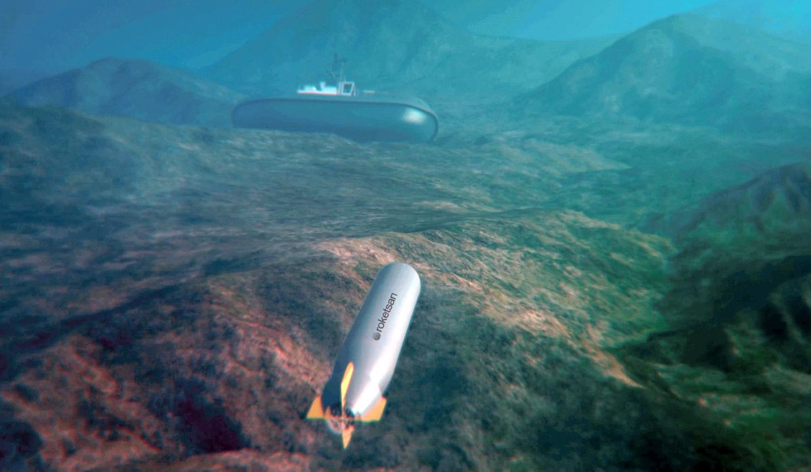
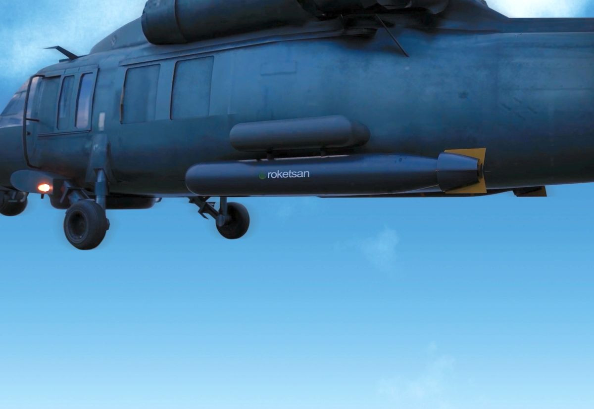
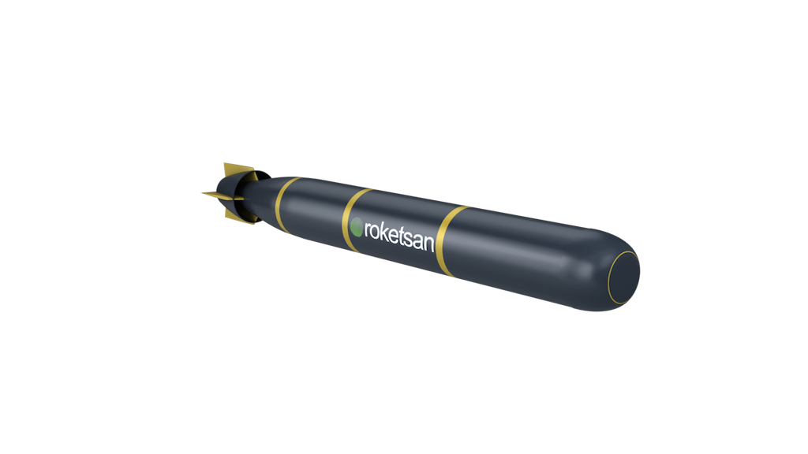

Yeni Nesil Hafif Sınıf Torpido
ORKA, çeşitli denizaltı tiplerine karşı kullanılmak üzere geliştirilen, tamamen yerli, yeni nesil hafif sınıf torpidodur. Suüstü gemileri ve hava araçlarından atılabilecek şekilde tasarlanmıştır.
Sistem; yüksek sürat, tam otonom görev yapısı, aktif/pasif sonar başlık ve akustik karşı-karşı tedbir kabiliyeti sayesinde modern denizaltı savunma harbi görevleri için önemli bir çözüm sunar.
ORKA’nın hafif sınıf yapısı, onu helikopterler, deniz karakol uçakları ve suüstü platformlarından kullanılabilen esnek bir sualtı silahı haline getirir. Fiber optik tel güdüm ve salvo atış gibi kabiliyetler de sistemin görev esnekliğini artırır.
15 km+
55+ knot
Aktif / Pasif Sonar
Suüstü / Hava Aracı
Elektrikli
Hafif Sınıf Torpido
| Sistem Tipi | Yeni nesil hafif sınıf torpido |
| Adı | ORKA |
| Görev Alanı | Çeşitli tipte denizaltılara karşı denizaltı savunma harbi |
| Atış Platformları | Suüstü gemileri ve hava araçları |
| Menzil | 15 km+ |
| Hız | 55+ knot |
| Güdüm Başlığı | Aktif / pasif sonar başlık |
| Karşı Tedbir Kabiliyeti | Akustik karşı-karşı tedbir yeteneği |
| Güdüm Modu | Tam otonom |
| Fiber Optik Kontrol | Fiber optik tel güdüm |
| Atış Kabiliyeti | Salvo atış |
| Tapa | Yaklaşma / çarpma |
| Tahrik Sistemi | Fırçasız DC elektrik motoru ve karşı döner pervaneler |
| Enerji Sistemi | Yüksek enerji yoğunluklu lityum bazlı batarya |
| Öne Çıkan Özellik | Suüstü ve hava platformlarından atılabilen, yüksek hızlı, yerli hafif torpido çözümü |
| Anti-Submarine Warfare | Denizaltı savunma harbi görevleri için optimize edilmiş kullanım |
| Yüksek Hız | 55 knot üzeri hız ile hedefe kısa sürede ulaşım |
| Otonom Görev | Tam otonom sualtı hedef angajmanı |
| Fiber Optik Güdüm | Operatör destekli tel/fiber optik yönlendirme imkânı |
| Karşı Tedbir Dayanımı | Akustik karşı tedbirlere karşı gelişmiş dayanım |
| Salvo Atış | Birden fazla torpidonun koordineli kullanımına uygun yaklaşım |
| Esnek Kullanım | Hava araçları ve suüstü gemilerinden atılabilme sayesinde geniş görev esnekliği |
| Düşman Denizaltıları | Çeşitli tipte denizaltılar |
| Sualtı Harp Hedefleri | Modern denizaltı savunma harbi kapsamında tespit edilen hedefler |
| Yüksek Öncelikli Sualtı Unsurları | Operasyon bölgesindeki kritik denizaltı tehditleri |
| Kullanım Sınıfı | Hafif sınıf torpido |
| Atış Platformları | Suüstü harp gemileri ve hava platformları |
| Kontrol Yaklaşımı | Tam otonomi ile fiber optik yönlendirme imkânını birleştiren hibrit yapı |
| Ailedeki Yeri | AKYA ağır torpidoya göre daha hafif, daha kısa menzilli ve çok platformlu kullanım odaklı çözüm |
| Görev Profili | ASW görevleri, helikopter ve suüstü gemilerinden denizaltı avlama konsepti |


